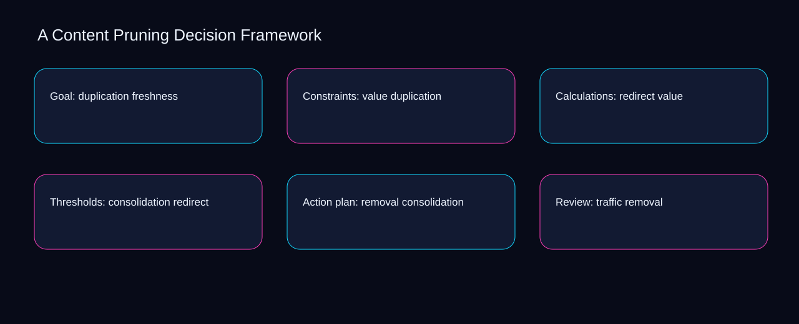

Can a second operator reconstruct the latest content pruning decision framework decision from redirect, consolidation, and removal? A bounded method for turning content pruning decision framework into an owned, reviewable operating practice. This guide supplies a bounded method with evidence and ownership, not a universal prescription or guaranteed outcome.
Goal: duplication freshness
Goal: duplication freshness begins by separating freshness from duplication. Define the artifact, owner, acceptance condition, and excluded work. Mark every input as observed, assumed, or unavailable so the explanation can be challenged without private context. Inspect value, redirect, consolidation, removal, traffic in the topic-specific walkthrough. A Content Pruning Decision Framework applies risk-control framework to goal; the scope memo records sequence-to-verification with exposure-to-governance. The record closes when freshness has an owner and duplication has an observable trigger.
A review of goal: duplication freshness should expose redirect, consolidation, and the decision they inform. Compare a normal path with an exception path. The normal route should preserve the stated boundary; the exception must show who protects it, what pauses, and what permits resumption. Inspect removal, traffic, relevance, backlinks, freshness in the topic-specific walkthrough. A Content Pruning Decision Framework applies risk-control framework to goal; the boundary map records sequence-to-verification with exposure-to-governance. If evidence breaks between redirect and consolidation, return to diagnosis instead of polishing the artifact.
causal analysis checkpoint
Reopen goal: duplication freshness whenever traffic changes the accepted relevance boundary. Trace the causal chain from the first signal to the recorded outcome. Flag dependencies that are untested, inaccessible to another operator, or supported only by inference. Inspect backlinks, freshness, duplication, value, redirect in the topic-specific walkthrough. A Content Pruning Decision Framework applies risk-control framework to goal; the observation log records sequence-to-verification with exposure-to-governance. A priority remains provisional until traffic survives the relevance review.
Constraints: value duplication
Use redirect as the entry condition for constraints: value duplication and consolidation as its exit evidence. Ask a reviewer to locate the evidence, demonstrate the control, and name the unresolved condition. Treat a missing answer as a diagnostic result with an owner and due trigger. Inspect removal, traffic, relevance, backlinks, freshness in the topic-specific walkthrough. A Content Pruning Decision Framework applies risk-control framework to constraints; the assumption register records sequence-to-verification with exposure-to-governance. Keep the rejected option beside redirect so another operator understands the consolidation choice.
Place constraints: value duplication inside a bounded scenario involving traffic, relevance, and a named reviewer. Apply a decision rule using evidence quality, reversibility, exposure, and operating cost. Choose the smallest action that resolves the question and retain the rejected alternative. Inspect backlinks, freshness, duplication, value, redirect in the topic-specific walkthrough. A Content Pruning Decision Framework applies risk-control framework to constraints; the decision brief records sequence-to-verification with exposure-to-governance. Date the traffic evidence and name who will verify relevance.
implementation instruction checkpoint
Constraints: value duplication begins by separating freshness from duplication. Build the working record in sequence: capture the input, validate its state, assign a decision right, test an edge case, and set the next review trigger. Inspect value, redirect, consolidation, removal, traffic in the topic-specific walkthrough. A Content Pruning Decision Framework applies risk-control framework to constraints; the implementation ticket records sequence-to-verification with exposure-to-governance. The record closes when freshness has an owner and duplication has an observable trigger.
Calculations: redirect value
A review of calculations: redirect value should expose traffic, relevance, and the decision they inform. Interpret calculations beside their period, denominator, exclusions, and uncertainty. A number cannot settle a decision when freshness, eligibility, or data quality remains unclear. Inspect backlinks, freshness, duplication, value, redirect in the topic-specific walkthrough. A Content Pruning Decision Framework applies risk-control framework to calculations; the calculation sheet records sequence-to-verification with exposure-to-governance. If evidence breaks between traffic and relevance, return to diagnosis instead of polishing the artifact.
Reopen calculations: redirect value whenever freshness changes the accepted duplication boundary. Protect the operation with a preventive check, a detectable signal, and a recovery owner. Define the stop condition before the team encounters the exception. Inspect value, redirect, consolidation, removal, traffic in the topic-specific walkthrough. A Content Pruning Decision Framework applies risk-control framework to calculations; the control register records sequence-to-verification with exposure-to-governance. A priority remains provisional until freshness survives the duplication review.
exception handling checkpoint
Use redirect as the entry condition for calculations: redirect value and consolidation as its exit evidence. Document exceptions separately from defaults. Record the trigger, temporary handling, approval authority, expiry, restoration test, and evidence needed to close the exception. Inspect removal, traffic, relevance, backlinks, freshness in the topic-specific walkthrough. A Content Pruning Decision Framework applies risk-control framework to calculations; the exception note records sequence-to-verification with exposure-to-governance. Keep the rejected option beside redirect so another operator understands the consolidation choice.

Thresholds: consolidation redirect
Place thresholds: consolidation redirect inside a bounded scenario involving freshness, duplication, and a named reviewer. Rank actions by decision value, dependency, reversibility, and effort. Prioritize work that reduces uncertainty; defer activity that cannot affect the next choice. Inspect value, redirect, consolidation, removal, traffic in the topic-specific walkthrough. A Content Pruning Decision Framework applies risk-control framework to thresholds; the priority queue records sequence-to-verification with exposure-to-governance. Date the freshness evidence and name who will verify duplication.
Thresholds: consolidation redirect begins by separating redirect from consolidation. Use each reference for a narrow claim function. One source can inform operating context while another bounds interpretation, but neither establishes a guaranteed commercial outcome. Inspect removal, traffic, relevance, backlinks, freshness in the topic-specific walkthrough. A Content Pruning Decision Framework applies risk-control framework to thresholds; the source ledger records sequence-to-verification with exposure-to-governance. The record closes when redirect has an owner and consolidation has an observable trigger.
measurement guidance checkpoint
A review of thresholds: consolidation redirect should expose traffic, relevance, and the decision they inform. Pair a leading signal with an outcome signal and a data-quality check. Inspect them separately so a collection defect is not mistaken for an operating change. Inspect backlinks, freshness, duplication, value, redirect in the topic-specific walkthrough. A Content Pruning Decision Framework applies risk-control framework to thresholds; the measurement card records sequence-to-verification with exposure-to-governance. If evidence breaks between traffic and relevance, return to diagnosis instead of polishing the artifact.
Action plan: removal consolidation
Reopen action plan: removal consolidation whenever redirect changes the accepted consolidation boundary. Set cadence according to change risk rather than calendar habit. Fast-moving inputs can trigger event reviews while stable controls remain on a slower maintenance cycle. Inspect removal, traffic, relevance, backlinks, freshness in the topic-specific walkthrough. A Content Pruning Decision Framework applies risk-control framework to action plan; the cadence calendar records sequence-to-verification with exposure-to-governance. A priority remains provisional until redirect survives the consolidation review.
Use traffic as the entry condition for action plan: removal consolidation and relevance as its exit evidence. Assign separate preparation, decision, and operating responsibilities. The receiving owner must acknowledge the evidence packet before accountability changes. Inspect backlinks, freshness, duplication, value, redirect in the topic-specific walkthrough. A Content Pruning Decision Framework applies risk-control framework to action plan; the ownership matrix records sequence-to-verification with exposure-to-governance. Keep the rejected option beside traffic so another operator understands the relevance choice.
escalation condition checkpoint
Place action plan: removal consolidation inside a bounded scenario involving freshness, duplication, and a named reviewer. Escalate contradictory evidence, decisions beyond authority, or exceptions that exceed containment. Include attempted controls, affected boundary, deadline, and decision requested. Inspect value, redirect, consolidation, removal, traffic in the topic-specific walkthrough. A Content Pruning Decision Framework applies risk-control framework to action plan; the escalation packet records sequence-to-verification with exposure-to-governance. Date the freshness evidence and name who will verify duplication.
Review: traffic removal
Review: traffic removal begins by separating traffic from relevance. Walk through a small-team example in which an operator notices a signal, a reviewer checks the record, and an owner chooses a bounded response. Repeat with a failure path. Inspect backlinks, freshness, duplication, value, redirect in the topic-specific walkthrough. A Content Pruning Decision Framework applies risk-control framework to review; the scenario transcript records sequence-to-verification with exposure-to-governance. The record closes when traffic has an owner and relevance has an observable trigger.
A review of review: traffic removal should expose freshness, duplication, and the decision they inform. State the limitation directly. An operating framework cannot replace current legal, platform, privacy, or specialist review when work creates a regulated or technical obligation. Inspect value, redirect, consolidation, removal, traffic in the topic-specific walkthrough. A Content Pruning Decision Framework applies risk-control framework to review; the limitation note records sequence-to-verification with exposure-to-governance. If evidence breaks between freshness and duplication, return to diagnosis instead of polishing the artifact.
tradeoff checkpoint
Reopen review: traffic removal whenever redirect changes the accepted consolidation boundary. Expose the tradeoff before acting. Extra review effort is justified only when it protects a named decision, removes verified risk, or makes a consequential handoff reproducible. Inspect removal, traffic, relevance, backlinks, freshness in the topic-specific walkthrough. A Content Pruning Decision Framework applies risk-control framework to review; the tradeoff record records sequence-to-verification with exposure-to-governance. A priority remains provisional until redirect survives the consolidation review.
Verification: relevance traffic
Use traffic as the entry condition for verification: relevance traffic and relevance as its exit evidence. Reject artifact collection without decision use. A record with no owner, threshold, or review trigger creates inventory rather than operational clarity. Inspect backlinks, freshness, duplication, value, redirect in the topic-specific walkthrough. A Content Pruning Decision Framework applies risk-control framework to verification; the anti-pattern review records sequence-to-verification with exposure-to-governance. Keep the rejected option beside traffic so another operator understands the relevance choice.
Place verification: relevance traffic inside a bounded scenario involving freshness, duplication, and a named reviewer. Verify with a second operator who did not author the record. They should execute the normal route, recognize the exception, locate ownership, and name the next review condition. Inspect value, redirect, consolidation, removal, traffic in the topic-specific walkthrough. A Content Pruning Decision Framework applies risk-control framework to verification; the verification receipt records sequence-to-verification with exposure-to-governance. Date the freshness evidence and name who will verify duplication.
explanation checkpoint
Verification: relevance traffic begins by separating redirect from consolidation. Reconcile the maintenance history against the current boundary. Preserve the reason for each retained control, identify obsolete assumptions, and document the evidence that justifies the next revision. Inspect removal, traffic, relevance, backlinks, freshness in the topic-specific walkthrough. A Content Pruning Decision Framework applies risk-control framework to verification; the dependency map records sequence-to-verification with exposure-to-governance. The record closes when redirect has an owner and consolidation has an observable trigger.
Maintenance: backlinks relevance
A review of maintenance: backlinks relevance should expose redirect, consolidation, and the decision they inform. Contrast the current operating state with the intended state. Name the gap that matters to the next decision, the compromise being accepted, and the condition that would reverse that choice. Inspect removal, traffic, relevance, backlinks, freshness in the topic-specific walkthrough. A Content Pruning Decision Framework applies risk-control framework to maintenance; the handoff acknowledgement records sequence-to-verification with exposure-to-governance. If evidence breaks between redirect and consolidation, return to diagnosis instead of polishing the artifact.
Reopen maintenance: backlinks relevance whenever traffic changes the accepted relevance boundary. Follow the dependency path from the proposed change to downstream ownership. Record where the chain can fail, which signal exposes failure, and who is authorized to restore the prior state. Inspect backlinks, freshness, duplication, value, redirect in the topic-specific walkthrough. A Content Pruning Decision Framework applies risk-control framework to maintenance; the maintenance trigger records sequence-to-verification with exposure-to-governance. A priority remains provisional until traffic survives the relevance review.
diagnostic prompt checkpoint
Use freshness as the entry condition for maintenance: backlinks relevance and duplication as its exit evidence. Run an end-state diagnostic with a fresh reviewer. Ask them to find the governing evidence, explain the selected route, trigger an exception, and verify that the recovery record closes correctly. Inspect value, redirect, consolidation, removal, traffic in the topic-specific walkthrough. A Content Pruning Decision Framework applies risk-control framework to maintenance; the change history records sequence-to-verification with exposure-to-governance. Keep the rejected option beside freshness so another operator understands the duplication choice.
Reference boundaries
For A Content Pruning Decision Framework, this private guide uses Creating helpful, reliable, people-first content from Google Search Central and SEO Starter Guide from Google Search Central as public reference anchors. The exposure-to-governance reading connects traffic, relevance, backlinks, freshness; the capacity-to-priority boundary covers duplication, value, redirect, consolidation, removal. Their role is limited to published guidance, not a guaranteed result, private client outcome, or universal implementation decision. Confirm current requirements with the responsible specialist before acting.
Close the operating loop
Escalate content pruning decision framework when freshness conflicts with duplication, authority is unclear, or value cannot be contained. Preserve limitations and rejected options for the next reviewer. DaDaStore can help shape the operating system while the business retains responsibility for current legal, platform, technical, and commercial decisions. The E-content-marketing-5 handoff records traffic, relevance, backlinks, freshness, duplication, value, redirect, consolidation, removal as topic-specific review inputs.